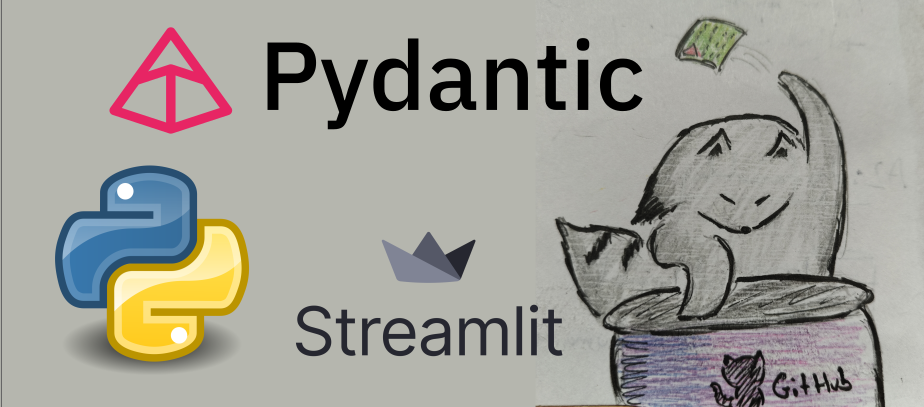

Raccoon Deepwiki: Building a GitHub FAQ Agent in 7 Days
A week-long build log: following Alexey Grigorev's AI Agents crash course, I went from zero to a fully deployed conversational agent that can answer questions about any GitHub repository's documentation — using local Mistral via Ollama, PydanticAI, and a custom search pipeline.

Overview
The goal was straightforward: build an AI agent that retrieves data from the FAQ section of a GitHub repository and answers user questions. The course by Alexey Grigorev laid out the roadmap one component per day starting from raw data ingestion and ending with a deployed web app.
The final system targets the DataTalksClub/faq repository, specifically the data-engineering course FAQs. It indexes the markdown files, runs a text-based search when a user asks a question, and passes the retrieved context to a locally-running Mistral model to generate a grounded answer with source links.
Day 1 Data Ingestion Pipeline
The first task was getting data into the system. Rather than cloning repositories, I built a lightweight pipeline that downloads any GitHub repo as a zip archive and parses its markdown files on the fly.
The ingest.py module does all of this in one function
call. It fetches the zip from GitHub's codeload endpoint,
iterates over every .md and .mdx file, and
uses the python-frontmatter library to extract both the
YAML front matter and the document body:
def read_repo_data(repo_owner, repo_name):
url = f'https://codeload.github.com/{repo_owner}/{repo_name}/zip/refs/heads/main'
resp = requests.get(url)
repository_data = []
zf = zipfile.ZipFile(io.BytesIO(resp.content))
for file_info in zf.infolist():
filename = file_info.filename.lower()
if not (filename.endswith('.md') or filename.endswith('.mdx')):
continue
with zf.open(file_info) as f_in:
content = f_in.read()
post = frontmatter.loads(content)
data = post.to_dict()
_, filename_repo = file_info.filename.split('/', maxsplit=1)
data['filename'] = filename_repo
repository_data.append(data)
zf.close()
return repository_dataI tested it against two repositories: the DataTalksClub FAQ and one of my own repos containing coding-agent instruction documents (best practices for Python, Java, JS, etc.). Frontmatter metadata parsed cleanly, and filenames were preserved for later source citations.
Day 2 Document Chunking
Raw markdown files can be very long. Before indexing, they need to be broken into smaller pieces that a search index can match against precisely. I explored three strategies:
- Simple sliding window fixed-size character windows with overlap
-
Section-based splitting split on headings
(
#,##, etc.) - AI-powered intelligent chunking ask an LLM to decide where meaningful boundaries are
The AI-powered approach was the most interesting to try and the most painful in practice. I tested it against the EvidentlyAI documentation (a very large corpus). An OpenAI API call immediately hit my usage quota. Falling back to a local Hugging Face Mistral 7B model worked in principle but took ages and eventually ran out of RAM I only managed to process my 22-document coding-instructions repo before giving up.
The takeaway: start simple. The sliding window
chunker, implemented in ingest.py, is what ships in the
final system. It is predictable, fast, and good enough for FAQ-style
content where sections are already short.
def sliding_window(seq, size, step):
n = len(seq)
result = []
for i in range(0, n, step):
batch = seq[i:i+size]
result.append({'start': i, 'content': batch})
if i + size > n:
break
return resultDay 3 Search
With chunked documents ready, the next step was building a way to retrieve the right ones at query time. I implemented three search modes:
- Text search exact keyword matching using minsearch
- Vector search semantic similarity using embeddings
- Hybrid search combining both scores
The principle I took away: start with text search and only add
semantic search when keyword matching is demonstrably insufficient.
FAQ content is keyword-dense and text search handles it well. The
final SearchTool wraps the minsearch index and returns up
to five results per query:
class SearchTool:
def __init__(self, index):
self.index = index
def search(self, query: str) -> List[Any]:
return self.index.search(query, num_results=5)
The index is built over two fields content and
filename so both the document body and the file path are
searchable.
Day 4 Tools and the Agent Loop
This is the day where a chatbot becomes an agent. The key difference: tools. An agent can decide to call a function, inspect its output, and then decide what to say rather than generating an answer from training data alone.
My first attempt used a local Hugging Face Mistral 7B model but it turned out this model doesn't support tool/function calling. I had to switch to an API-backed model. I wanted to stay with Mistral, so I used the Mistral API via PydanticAI's OpenAI-compatible provider (later switched to Ollama for local inference):
ollama_model = OpenAIChatModel(
model_name='mistral:latest',
provider=OllamaProvider(base_url='http://localhost:11434/v1'),
)
agent = Agent(
name="gh_agent",
instructions=system_prompt,
tools=[search_tool.search],
model=ollama_model
)Digging into the provider-specific response objects was the real lesson here. Response formats differ significantly between LLM providers; PydanticAI abstracts most of this, but tool-call parsing required careful attention to the Mistral response schema.
The system prompt instructs the agent to always search before answering and to cite sources as GitHub links:
Always include references by citing the filename of the source material you used.
Replace it with the full path to the GitHub repository:
"https://github.com/{repo_owner}/{repo_name}/blob/main/"
Format: [LINK TITLE](FULL_GITHUB_LINK)Day 5 Offline Evaluation
Shipping without evaluation is flying blind. Before Day 5, I had been doing informal "vibe checks" asking questions and reading the answers. That's a fine starting point, but it doesn't scale and can't catch regressions.
I built four things for evaluation:
-
A logging system (
logs.py) that captures every interaction agent name, system prompt, model, tools used, and the full message history as a timestamped JSON file - An LLM-as-judge evaluation loop that feeds logged conversations back to a model and asks it to score the response on structured criteria
- A set of evaluation criteria covering relevance, accuracy, citation quality, and tone
- A system prompt comparison to test different prompting strategies against each other
def log_interaction_to_file(agent, messages, source='user'):
entry = log_entry(agent, messages, source)
ts = entry['messages'][-1]['timestamp']
ts_str = ts.strftime("%Y%m%d_%H%M%S")
rand_hex = secrets.token_hex(3)
filename = f"{agent.name}_{ts_str}_{rand_hex}.json"
filepath = LOG_DIR / filename
with filepath.open("w", encoding="utf-8") as f_out:
json.dump(entry, f_out, indent=2, default=serializer)
return filepathKey insight: collect real interaction data first, then build evaluation on top of it. "Vibe checks" at the start are not embarrassing they are necessary to accumulate enough data to make automated evaluation meaningful.
Day 6 Modularization and Deployment
Up to this point everything lived in a single, messy notebook. Before deploying, I had to clean house: new virtual environment, explicit dependency list, and a proper module structure.
The final codebase has five focused modules:
-
ingest.pydownloads and indexes GitHub repositories -
search_tools.pywraps the minsearch index as a callable tool -
search_agent.pycreates and configures the PydanticAI agent logs.pypersists conversation logs to JSON files-
main.pyCLI entry point that ties everything together
For the UI, I chose Streamlit. It wires up a full
chat interface streaming responses token by token in under 90 lines of
code. The @st.cache_resource decorator makes sure the
index is built once at startup and reused across all subsequent
requests:
@st.cache_resource
def init_agent():
repo_owner = "DataTalksClub"
repo_name = "faq"
def filter(doc):
return "data-engineering" in doc["filename"]
st.write("Indexing repo...")
index = ingest.index_data(repo_owner, repo_name, filter=filter)
agent = search_agent.init_agent(index, repo_owner, repo_name)
return agentI'm a Streamlit advocate for a specific reason: my boss has a habit of catapulting POCs to production without asking. Streamlit's distinctive look is a reliable signal that something is a prototype, not a product so he leaves my experiments alone. A small but non-trivial engineering advantage.
Day 7 What Was Built
Over seven days, the project went from nothing to a complete, running system. Here is what ended up in the repo:
- A data pipeline that can ingest and index any GitHub repository's markdown documentation
- A sliding-window chunker for splitting long documents
- A text-based search engine backed by minsearch
- A PydanticAI agent with tool-calling, running Mistral locally via Ollama
- An interaction logging system for offline analysis
- An LLM-as-judge evaluation framework
- A Streamlit web app with streaming responses
The biggest practical lessons: complexity should be earned, not assumed. Simple chunking beat AI-powered chunking for this use case. Text search beat vector search for FAQ-style content. Starting with vibe checks is fine as long as you replace them with structured evaluation before you ship.
The difference between a chatbot and an agent is tools. Everything else the retrieval pipeline, the chunking strategy, the evaluation framework exists to make those tool calls return something useful.